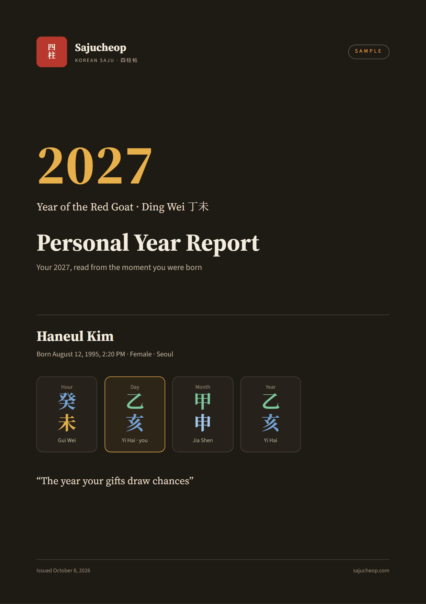
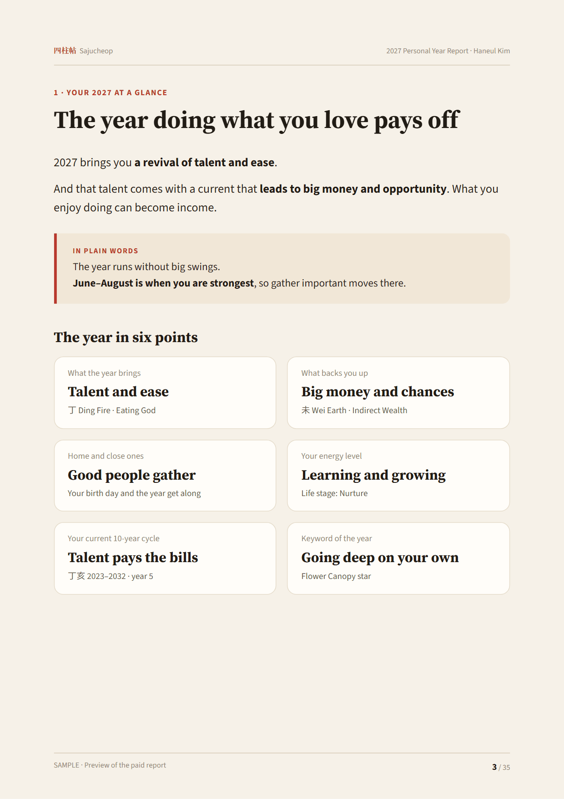
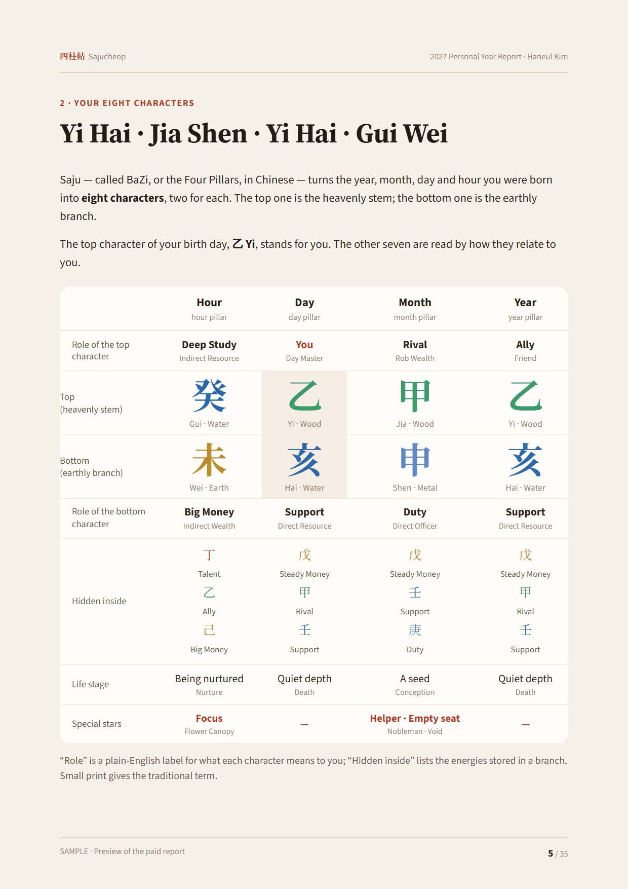
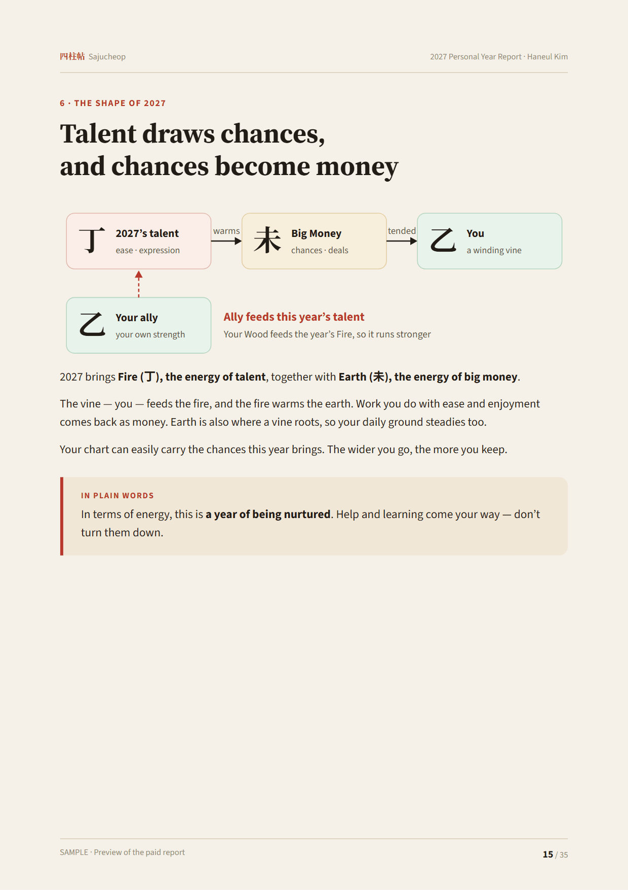
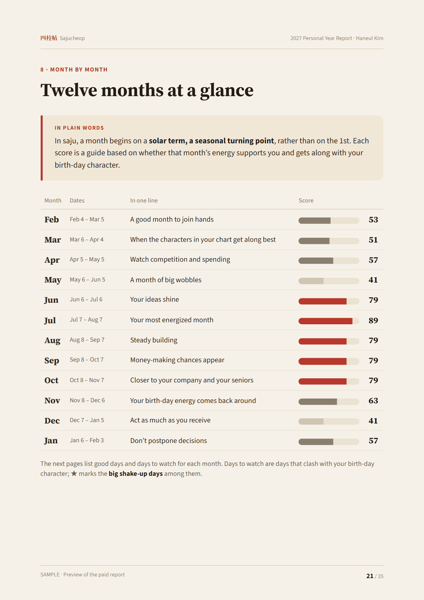
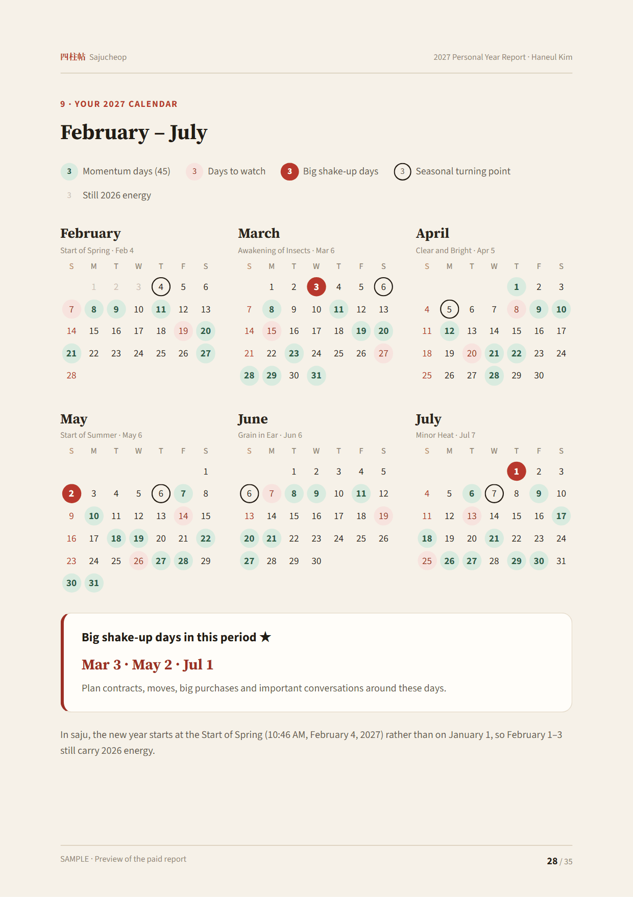

A 35-page PDF that reads your 2027 from all eight characters of your birth chart. Free zodiac readings look at one animal; this report reads your whole Four Pillars together with the 10-year luck cycle you are in now, scores every day of 2027 for you, and picks your good days.
What is inside
- Your 2027 at a glanceThe year in two pages
- Your eight charactersChart · five elements · roles
- Who you areCharacter and strengths
- Connections and special starsWhat gets along, what clashes
- Your 10-year luck cyclesThis decade and the next
- The shape of 2027This year’s energy meets your chart
- 2027 by areaWork · money · love · health · study
- Month by monthFebruary 2027 to January 2028
- Your 2027 calendarGood days and days to watch
- Good days for big plansContracts · moving · deals · dates
- Your 2027 action guideWhat helps · what to do · what to avoid
- AppendixGlossary and how it is calculated
Sample pages





Pages from a sample made for a fictional reader, Haneul Kim (born August 12, 1995, 2:20 pm, female).
How it differs from the free readings
| Free readings on Sajucheop | 2027 personal report | |
|---|---|---|
| Based on | One zodiac animal or day pillar | All eight characters plus your current luck cycle |
| Two people with the same sign | Same text | Different reports |
| Dates | Today and this month | All 365 days of 2027 scored, good days by purpose |
| Format | Web page | A 35-page PDF with your name, print-ready |
How to order
- Click Buy and pay on Gumroad.
- Copy the purchase code shown on the receipt page and in your email.
- On the Make your report page, enter the code with your name, gender, birth date and time. Your report opens in seconds and you can save it as a PDF right away.
Questions
What if I do not know my birth time?
The report is calculated from the other six characters and the hour pillar is left out. A few hour-based readings get shorter, and the report says so.
Can I use a lunar birthday?
Yes. It is converted with the Korean astronomical (KASI) lunar calendar. If you were born in a leap month, please say so.
What happens to my birth details?
They are used only while your report is being made and are not stored. To stop one code being shared, we keep only a one-way signature derived from them. The free calculators on Sajucheop still run entirely in your browser.
Can I download it again?
Yes. Use the same code with the same birth details any time. You can change the name freely, and fix a mistyped birth date up to two times. Korean and English versions are both included.
Can I get a refund?
Before your report is made, yes, in full. Once it is made, a personal digital report cannot be returned, but if anything is miscalculated we fix it. Message us on Instagram @sajucheop.
Is this a prediction?
No. It is a reflective reading based on the rules of traditional Korean and Chinese astrology. Please make health, legal and money decisions with a professional.
Questions? Send a direct message on Instagram @sajucheop. Try the free BaZi calculator and the 2027 zodiac forecast first if you like.